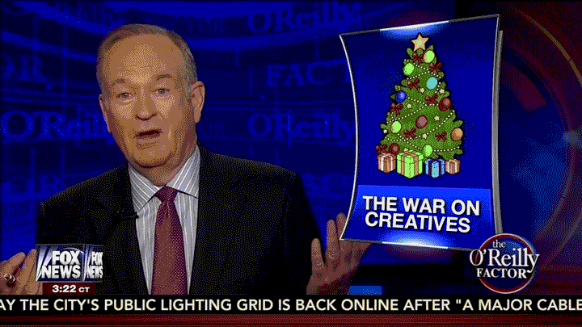
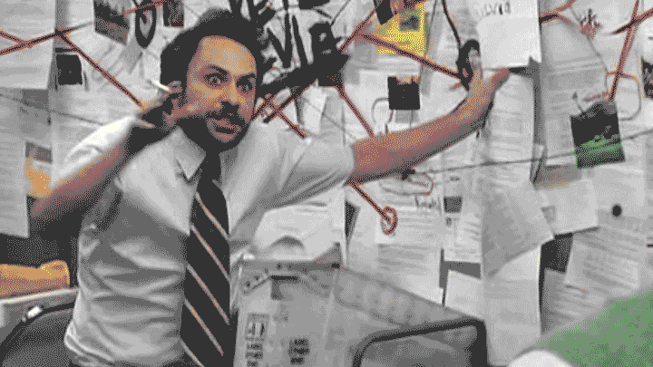
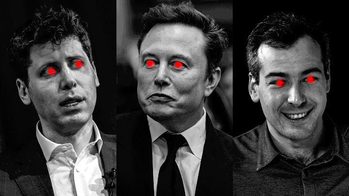
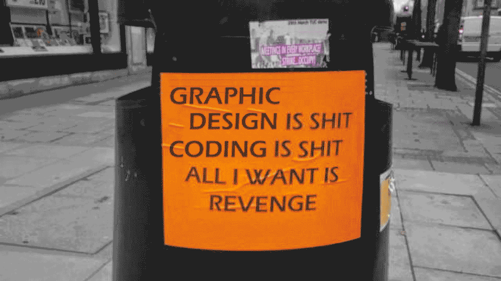
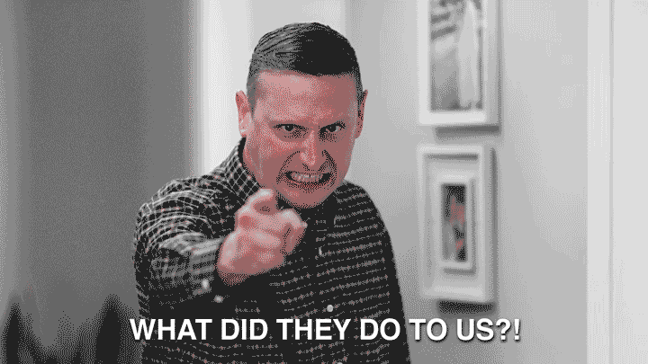
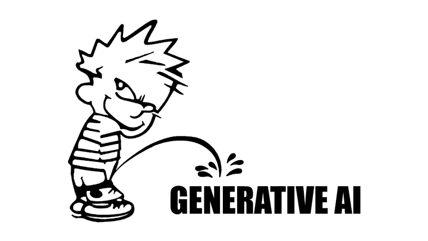
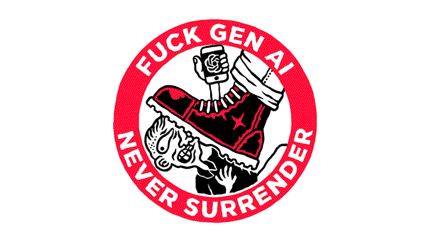

mattcolewilson.com → the #1 AI hater has logged on
Back to top ⤴
Made by human labor. © 2026 All Rights Reserved
mattcolewilson.com → the #1 AI hater has logged on
First, thanks for stopping by my website to look at this work-in-progress article. It’s a little rambly and sprawling, so maybe just jump to the heading that interests you most. Or close the tab, whatever you want. I’m just trying to get some thoughts out and go on record about this stuff. If you have any corrections or suggestions, please feel free to email me. The version you’re reading was last updated March 1, 2026.
“Creative,” when used as a noun, is a dicey word. It divides the world between those who are creative and those who are not. Which is, of course, a false dichotomy. Everyone is creative every single day of their lives. I think we should consider retiring the word as a noun, as it’s essentially meaningless and almost certainly does more harm than good.
When it comes to creative work, I’m a proponent of Aaron Draplin's school of thought. He equates the work of the creative to the work of the craftsperson, which is a much more accurate and useful framing. While there is some subjectivity and “art” in graphic design (and any creative field), it’s primarily a trade that has common tools, foundational skills, and agreed upon best practices. It’s not simply a talent that you are born with, it is a skillset that anyone can learn and develop.
Early in my career, this framing helped me tremendously, as it meant I did not have to rely on a mythical muse or a difficult-to-access well of magical, innate talent. And it continues to help me communicate what design work is, how it’s done, and how it’s valuable.
If you have worked in a creative field, the problems with dividing the workforce between those who are creative and those who are not is likely extremely obvious. My entire career has been doing design work in internal marketing departments. And in my experience, the marketing department as a whole is usually mildly despised by the rest of the company. The executives don’t fully understand what we do and are likely to target Marketing any time they need to cut expenses or staff. The operations side thinks we just draw pictures all day. The sales people think we have it easy. (And maybe they’re right. Sales does seem like a kind of Hell.)
Phrases like “do your magic” are used extremely often. While this is usually intended as a compliment, it’s actually (unintentionally) dismissive of a practical skillset that has taken years (or decades) to develop. There is typically little appetite for those outside of the creative field to understand the creative process. And obviously, that's fine, no pressure. (And honestly, some of this is the designer’s fault, as many of us can be a little opaque and artsy.) But this makes that imaginary divide feel more real. And division often leads to resentment.
 A doctored screenshot of The O'Reilly Factor.
In addition to this dividing the workplace, the false split of “creatives” and non-creatives has created a deeper and more widespread cultural divide. This has been a thing I’ve witnessed for all of my life. Maybe this sounds conspiratorial, but I believe it’s a big reason that generative AI is coming for creative work first and primarily. (At least, that’s where the conversation has been centered.) And many of the proponents of generative AI have been very vocal about their disdain and dismissal of creative work, the creative process, and of creatives in general.
For a couple of examples: Elon Musk has outright refused to credit creative work and has said he wished other people “would stop crediting artists on Twitter.” The founder and CEO of Suno, the leading AI music generator, has said that “the majority of people don't enjoy the majority of the time they spend making music.” These are (hopefully) obviously insane things to believe and speak aloud. Like, completely deranged. Completely worthy of outrage.
These people enjoy creative works (as everyone does), but they do not respect or value the creatives. Their vision for the future is one where creatives are no longer necessary. A world where creatives no longer exist. It's a removal of division not by unity, but by erasure.
When these people are feeling more diplomatic, they like to frame it as empowering non-creatives to be creative. Giving everyone access to the “magic” that creatives have been hoarding this whole time. And again, this is all bullshit. Everyone is already creative. If there is a magical element, you're all fucking wizards already. Cavemen were creative. Toddlers are creative. Artists are creative. Accountants are creative. You are creative!
Another element is what I believe to be the intentional erosion of community. It is true that one’s ability to be creative has limits. We all naturally branch off into our own directions and gain special skills and unique areas of focus. But this is actually a good and beautiful thing. Not everyone needs or should be an accountant, a sculptor, a writer, a painter, and a plumber at the same time. It is good and virtuous to rely on others. It is baked into our biology. It’s the most natural thing in the world. Collaboration is central to society. And it is the only source of our power.
But the people supporting AI want us to be isolated from one another. Their utopia is one of artificial self-sufficiency. Where we live in our own, little, walled-off worlds. Where our only friend, confidant, and collaborator is a chatbot. Where the only art we interact with is a pink paste, devoid of meaning or soul, completely unchallenging and flavorless. The lines of communication are closed, real community no longer exists, but buddy, the content never ends.
 I haven’t seen this show, but maybe this is appropriate.
This could be the most arguable point in this article and possibly the worst way to open up the conversation, but I think it's all true and it helps explain why and how everything else is happening.
(It is also worth noting to anyone reading this that they’re obviously not going to stop with creatives. They’re coming for everyone, everywhere. But I’m trying to keep this somewhat focused on my profession, so a broader conversation is outside the scope of this piece.)
The biggest problem with having this conversation is that “AI” is a big, nebulous term that is nearly devoid of any specific meaning. The marketers of generative AI have purposefully and strategically diluted the conversation in order to maintain hype and circumvent criticism. “Artificial intelligence” is technically within almost every corner of the digital realm. Complaining about AI is almost the same as complaining about “technology.” The topic, as a whole, is simply too large to have productive conversations about. Every concern raised is responded to with an infinite stream of what-about–isms. Any specific objection will get you called a luddite in general. It’s maddening and I’m extremely disappointed in those of you who have fallen for this very silly trick.
 These are also “tools,” under certain definitions of the word.
People I love and/or respect have argued that AI has been prevalent in digital creative tools since nearly the beginning. And there’s truth to that. But surely that doesn’t mean that every possible application of AI is the same or should be accepted. Using and accepting a piece of technology surely does not mean that every possible technology should also, defacto, be accepted.
When people like me raise concerns about AI, it should be obvious that we aren’t talking about color correction or smart objects. We’re not even talking about automatic subject selection or the now decade-old content aware fill (which is technically generative AI but with clear borders and restraints). It should be very easy to understand the difference between an AI-enhanced feature and full-on image or layout generation based on a text prompt. We should be able to have a nuanced discussion about these very apparent and obvious differences, but it's actually extremely difficult, somehow. Which I find to be incredibly annoying, and to be honest, a little suspicious.
I was watching a design influencer on YouTube last week. He was talking about growing as a designer and “staying hungry.” Constantly learning new things, studying great design work, honing your craft, working on self-initiated projects, etc. All things I agree with and do on a regular basis. But then he suddenly suggested using AI to generate layout ideas. And, my man, generating layout ideas IS the job!!! Learning or using a tool to help you do the work and using a tool that actually does all the work itself are drastically different things. Worlds apart. It’s insane and dishonest that people are acting like these are comparable.
Using AI to generate layout ideas is worse than using a Canva template. Admitting this should get you laughed out of the industry. It should be met with universal disdain.
I mean, just imagine it: this graphic designer wrote a script that included those words, set up a camera and microphone, spoke the words aloud while recording, edited the resulting video, uploaded it to YouTube, and posted it himself. Under seemingly no threat of physical harm. How intensely shameful. How deeply embarrassing to be part of a professional field where this is acceptable.
 An old meme, now more relevant than ever.
It’s like nobody wants to work anymore, lol. But for real, it is absolutely surreal because I feel like I’m operating under the impression that cutting corners should be avoided and that integrity and ethics are things that matter. I’m “generating layout ideas” myself because it’s something I love doing and I was under the impression that we designers all felt the same way. I’m attempting to remain vigilant and dedicated to the true and the good, but this gets framed as being anti innovation. But let me tell you, friendo: generative AI is foundationally anti innovation. It is quite literally a mediocre machine. It fundamentally cannot create anything new. It can not innovate. It can only combine and blend the old. If it can generate anything, it can only generate ripoffs. And it should be regarded as such.
The biggest and easiest argument against generative AI is the moral one. The entire foundation is built on stolen labor. A giant, evil vacuum has and is continuing to suck up and consume work without, and oftentimes, against the consent of its creators. Theft is the fuel for this horrible machine. I find this point alone to be extremely compelling. I’ve had my work stolen before and it sucks. But even if I hadn’t, I could immediately understand how it would be a shitty thing. But this particular argument doesn’t seem to move many people. Most everyone acknowledges that this is a problem, but then they just shrug and move on. There’s not really a rebuttal that I’ve encountered, aside from abject apathy. And that’s a huge bummer. But maybe other moral arguments will move you, instead? Let’s try it!
Did you know that generative AI is also used to create sexual content of people without their consent (including minors). And I’m not talking about some fringe, darkweb shit. I’m talking about Grok, the AI launched and led by Elon Musk. This is extremely within the mainstream. And sure, Grok (aka MechaHitler) defenders will argue that it is simply a tool and tools can be used to do horrible things. But I dunno, man, I can’t think of any other tools that can be used to generate child pornography. Seems like a uniquely new and heinous crime against humanity that I, personally, have a strong moral opposition to.
I occasionally get accused of having strong opinions when it comes to ethics. But if I was a betting man, I would have put a large sum of money on the idea that this particular moral problem would be something we would all agree on. Not a lot of complex moral calculus required on this one. But thank God I’m not a gambler or I would have lost a lot of money!!
There’s also issues with AI chatbots indulging people’s delusions and occasionally encouraging them to kill themselves. Again, this is another mainstream one. Maybe the most mainstream AI of them all: ChatGPT. Maybe I’m just a zealot, but this seems like something worth boycotting or criticizing or regulating, maybe? It’s extremely surreal to feel like a minority when it comes to having problems with this stuff. Like this is the most obviously objectionable shit I’ve ever heard of, and so many of you just shrug it off. Sucks!
 An honest and sincere question.
There are lots of other moral considerations, too, like the OpenAI president giving $25 million to Trump in 2025, making him the largest individual donor of last year. Or the fact that generative AI is impressively worse for the environment than anything else mankind has come up with so far. We’re speed running climate change now – and for what? But I’m sure if you don’t care about labor theft or child pornography, you will likely not care about supporting fascism or destroying the environment – so maybe this paragraph could have been left out altogether.
To dial it back from the extremes a little, isn’t there also just an inherent dishonesty in using generative AI that’s worthy of objection. I remember a time when there was cultural pushback against airbrushed models on magazine covers. People were sick of artificiality, even when it was something as seemingly harmless as removing a few blemishes and wrinkles or shrinking a waistline. How quaint! Fast forward 15 years or whatever and now a bunch of you are totally fine with fully-AI-generated ads and influencers. Listening to fully-AI-generated songs. Watching fully-AI-generated videos.
It’s a weird thing to try to argue against, because to me, this stuff so obviously sucks. It’s like trying to explain something that should be universally inherent. Like, it’s so clearly lame on its face, that it’s difficult to further unpack. I am experiencing second-hand embarrassment just trying to reason with a person who thinks the above things are acceptable or cool. Maybe I can’t do it! Maybe I just have to accept that a lot of people don’t care about anything at all. I don’t think I can reach those people. Hopefully you’re not one of them!
First off, hell yeah. I’m totally fine being labeled a hater. It is a term I proudly self apply. I believe my hatred is pure and justified. And most of the applications that are getting the focus are worthy of your hatred, too. Even outside of all the evil stuff I’ve brought up. Even outside of the attempts to replace human creativity and ingenuity. I assure you, you almost certainly do not need help writing a text message to a friend. You do not need an email summarized for you. Think better of yourself, for the love of God, please. The only correct response to software asking if you need help writing a text to a loved one should be “NO!!! FUCK YOU!!!!!” Do not let these people infantalize you.
 I sincerely apologize to Bill Waterson for this one.
But to counter the “just a hater” argument, here’s a soft rebuttal: Way back in the mid 2010s, there was a website that relied on volunteers to train an AI model to recognize cancer cells. My wife and I donated a few hours of our time to this because we thought it was extremely cool and beautiful. Now, would a hater spend their own free time willingly and proudly training an AI model? Seems unlikely! And that was around 15 years ago. Way ahead of the curve. I was a true early adopter. While you were out partying, I was at home on the computer training an AI model. We are not the same.
And to be clear, I still think that sort of application is cool and beautiful. This is the sort of thing that should be championed and should be getting the limelight. There’s tons of potential for actual good to be done in the world with AI’s help. But why isn’t anyone talking about those advancements? When’s the last time you heard a conversation about improving accessibility with AI? About advancing medicine or science? When’s the last time you heard a conversation in the mainstream about anything other than outsourcing the creative process? (See the first section for a possible clue!)
In a recent conversation with my father-in-law, I expressed this (relatively new) concern that my career may have an expiration date due to generative AI. In an attempt to offer some comfort, he sent me an email sharing his experience with generative AI and how much work it actually took to get it to produce usable results. It was not as easy as saying “do this for me.” It had to be coached and guided by someone with pre-existing design knowledge and taste. The crux of his message being that even if AI gets good at doing my whole job, there will always be the need for a human who has the eye for design to determine if what it produces is acceptable or not. That there’s hope that I will not be entirely replaced.
And, I can’t stress this enough, I appreciate the sentiment and the attempt to offer some condolences. It was a very kind and considerate email! But with peace and love, I have less than zero interest in babysitting an evil piece of software. I am a graphic designer because it became a special interest of mine, I fell in love with the work, and I got pretty good at it. I’ve found employers that value the work I do and we’ve entered a mutually-beneficial relationship. But if there comes a time in my career where I’m not actually designing any graphics, but instead telling an AI to design the graphics for me — at that point I will no longer be a graphic designer. At that point I will find another career.
And I realize it requires privilege to be able to draw a line in the sand like that. But to be clear, I have no idea what I would do if this graphic design path reaches a dead end. It would be catastrophic to have to find another career path. I would be starting over. And that’s genuinely depressing and terrifying.
But what do you do when you grow to hate your job? Or when the work becomes completely unethical? You try to find another one. And that’s the boat I’d be in if this all does come to fruition. I truly, desperately hope it does not happen. But this is a hill I will die on.
 Art by Łukasz Kowalczuk.
Please know that I deeply, genuinely love graphic design work. If I am outed from the professional field, I will still continue doing it for fun in my free time. (Look at my home page and count the number of pieces that were self-initiated personal projects.) I hope that my passion has been clear throughout this article. The reason I feel strongly about this, defensive even, is because I believe in the good and oppose the evil. And I believe that evil has gained a foothold and that this is cause for vocal concern.
But despite everything, I do have some hope that human creativity will remain valuable. That a mutually-beneficial arrangement can remain intact. I have hope that society will reject this rotten vision of the future. And I do not think I or anyone else should believe that this is all necessarily inevitable. The billionaires and grifters are known liars. There is no reason we should simply take their word for it. (And honestly, you should feel foolish if you’ve ever parroted their claims of inevitability.)
There’s hope that they will one day decide they’ve shoveled enough money into this particular furnace and move on to the next one. There’s hope that the bubble will burst. That the ROI isn’t quite high enough to satisfy the shareholders. Or that the people, largely, do not want what they are selling. Or at the very least, there will be pockets of opposition that remain.
———
Image Credits (In Order of Appearance)Back to top ⤴
Made by human labor. © 2026 All Rights Reserved